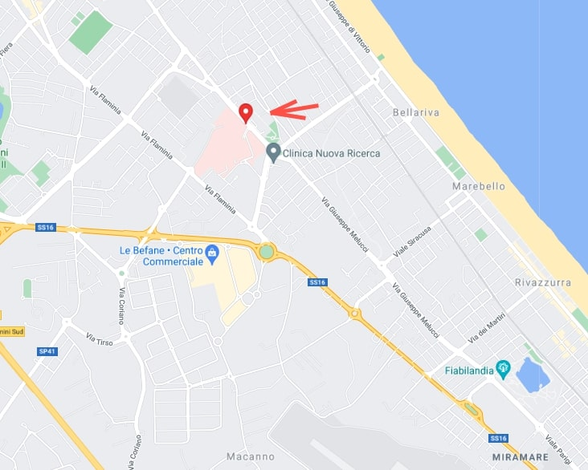

Ospedale Infermi di Rimini
Ospedale Infermi di Rimini
Home
Neurologia
Ginecologia
Cardiologia
Radiologia
Urologia
Analisi cliniche
Download info
Orari Visite
Dove si trova ? Quando e' stato costruito ?

Visualizza mappa piu' grande
Un po' di storia... nato nel 1974.